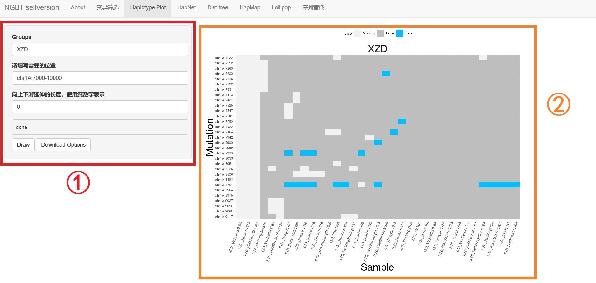
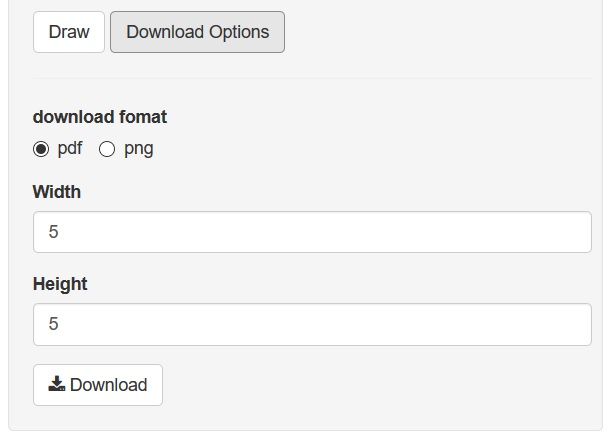

1. Haplotype plot

Haplotype plot provides a more clear way to analyze mutation type through different samples.
1.1. Panel ① on the left provides severial options:
Groups: different from
variation subset, samples here need to be divided into no less than 1 group.Group1{sample1,sample2}is a sample of temporary group, in whichGroup1is the name of the group, and sample labels in the curly brackets they are contained in the group.Group1{sample1,sample2},Group2{sample3,sample4}is a example for multiple groups. Also, you can use the pre-defined groups showen in theAbouttag. It's NO need to add hash here, because the input here is group instead of plain samples. Make sure that a sample won't appear more than once.Regions: same as
variation subset.Extra length before AND after the regions (bp): same as
variation subset.Draw: click after fulfill options, and panel ② will display the plot (if every settings are correct).
1.2. Download

Click the Download Options button, and then you can select the format, the width, the height of the file you download. Then, click Download to download the plot.
1.3. Error message
If everything goes smoothly, and the plot displayed, then there will be a "done" here. But, if some options goes wrong, there might be some short error message here to help fixing it. Mostly, recheck the input of options is useful.